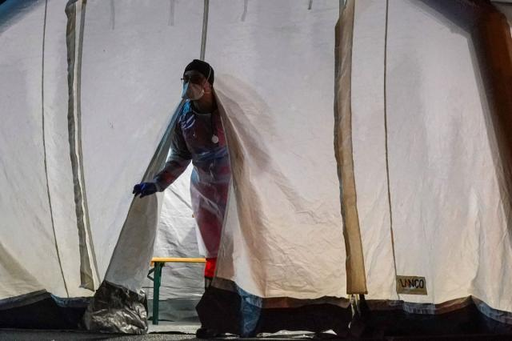
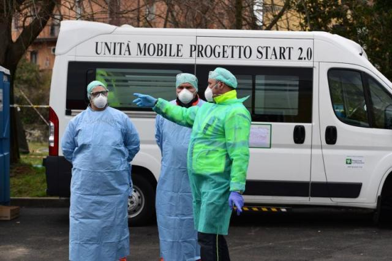
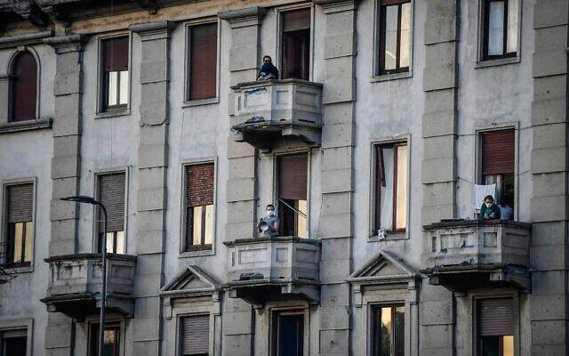

作家方方：是的，活下来就好-作家方方-财新博客-新世纪的常识传播者-财新网
原文链接 备份链接 二月初五（2月27日）。 天气又阴了。有一点凉气，但也不算太冷。走出去望望天，觉得没有阳光的天空，多少有些阴郁和沉闷。 昨天微信号所发文章，又被删除。微博再次被屏蔽。我以为微博不能发了，试了一下，发现还可以再发其他，只 …
体坛周报全媒体驻意大利记者 王勤伯
（一）
我知道你们看到题目，会立即去联想，抗疫就是一场战争。
这不，英国疯子首相约翰逊推出了“牧群免疫”方案，俨然一副大敌当前的模样，希望让自己成为“新冠丘吉尔”，带着自我牺牲的大无畏精神，强化大不列颠人民百毒不侵的身体。
约翰逊的方案如果能够获得成功，至少可以证明英国人是一个比猪更有进化能力的物种。
想想，非洲猪瘟疫情使得全球的生猪存栏量减少了近四分之一，但也没有换来猪群的群体免疫力，英国人却相信可以用60%人口感染新冠换来“牧群免疫”效应。
让我感到意外的是，为什么梅毒过去如此肆虐欧洲，却从未让欧洲人民产生对梅毒的“牧群免疫”效应。

当我第一次看到约翰逊那头蓬乱的金发，我确实想到过梅毒。我认为，换作梅毒肆虐的时代，这家伙如果年纪轻轻就染上病，或许有潜质成为英国的波德莱尔或者李斯特。
或如天花，人类并不因为天花肆虐而获得集体免疫，种牛痘的办法改变了天平的平衡。今天的人类正在失去对天花的免疫力，因为天花已经消失了。
我不了解天花，我只知道胳膊上的那个小疤痕是牛痘疤，在男生身上并不引人注目，却把若隐若现的性感镶嵌在少女夏天裸露的上臂。
未来的某一天，我们的后代会纪念世界上最后一位身上有牛痘疤的人去世。
但这些不是我想说的战争与和平。如果约翰逊希望去打一场约翰牛大战新冠病毒的勇武战争，那是约翰逊和英国选民的问题。
约翰逊宣扬脱欧好处时曾大声承诺英国因此可以优化NHS，拥有全世界最好的公共医疗。现在我们大概知道，全世界最好的公共医疗就是集体感染病毒。Thanks, Sir!

（二）
我想说的战争与和平，来自巴拉圭报纸上看到的一则笑话。
巴拉圭报纸每天封底的笑话是我的钟爱。
《战争与和平》：
停战以后，两个士兵在战场上相遇了。
两人聊起为什么离家参军打仗。
士兵甲：因为我单身嘛，我喜欢战争。
士兵乙：因为我结了婚，我想寻找和平。
我想说都在这个笑话里。
当我们把疫情描述为一场战争，并围绕战争舞台的设计，像包装电影演员一样去突出战争里的指挥、参谋、后勤、战士、冲锋队等每个角色，我们其实并不清楚这样壮丽的图案画是否印证每个剧中人的心境。
例如，被我们描述为正“战斗”在一线的医护人员，他们正在经历的是战争的考验，还是爱与和平的圣礼？

从疫情开始到现在，每一次听到或者读到武汉前线医生、上海张文宏医生、还有意大利各大医院一线医生的采访，只要话题纯粹只关乎医学，我总是叹服他们在疫情面前坦然和镇静。你看不到他们的战争，只看到他们内心的和平。作为缺乏医护经历的普通人，我们在生与死之间是否拥有和他们一样的态度？
所以，当我听到不止一位意大利医生在电视直播中怒斥本国政客，“让我们安静工作！你们都闭嘴！”我知道医生救助病人并不带有与某物某人某国争斗的目的，相反，他们的每一个决定和举动是试图把自己的知识、经验和直觉转化成病人身体的和平。战争需要命令，医生不需要，他们需要尊重、需要支援、需要理解，同时，需要社会让他们安静工作。
如果一个社会能够以最平静的方式去对待疫情，包括封城的决定，难道必须把抗疫渲染成战争？难道除了战争，人类就没有别的一致行动的理由？作为普通人，避免各种战争特色的惊恐、哀嚎、卖弄，会是对医生最大的帮助。
（三）
我知道你们习惯了在发自世界各国的疫情日记中看到该国最新的数据、举措、吐槽和搞笑，有时候我也想对你们讲述一点什么，例如：
有22个小孩在围栏上搞出一个洞，钻进伦巴第疫区城市布斯托阿尔齐奥的一个足球场踢比赛，然后警察叔叔闻声赶来，把他们都赶回家了。
或者，我应该告诉你们，在我居住的街区公寓楼群里，没有人唱意大利国歌。这里住的全都是自私自利的中产阶级。
我只看到正午阳光最灿烂的时候，对面楼顶层的一对年轻伴侣在阳台上坐了一小会儿。他们是我今天白天唯一见到的外人。他们也应该看到了我们家两条狗在阳台上拉屎。看完我清理热腾腾的狗屎，等我再用水把阳台冲洗干净，他和她就进屋了。他们没有拉上窗帘，所以应该是做饭去了。
听说某地在结束封城以后，离婚人群排起长龙，把整个3月办事机构的档期都占满了。这种事本也不该听说，在任何地方都可能发生。两个人的世界，可以在封城状态下找到更多和平的理由，也可以找到更多开战的借口。


这是我看着对面阳台那对小夫妻的感受。在封城的日子里，如果没有染病，那么人的感受永远大于经历，尽管我从来都把自己的感受视作经历。
例如，凌晨时分我带着两条狗去花园广场。那里无比安静，狗狗去吃青草，我打开手机观看美国民主党女议员成功逼宫CDC，让每个美国人获得免费检测的视频。她得到了无数网友的称赞。
她在我的手机上还没说上几句，树顶上一只猫头鹰就大声发话了。它的嗓音就像一个幽灵，穿行在树顶和空荡的广场。过去在这个时段来遛狗，我从未听到过它的发言。
随后，另一棵树上一只疑似乌鸦的鸟发出连续不断的“啊哈”声音。
猫头鹰再发幽灵之声，现在像是在讥笑。乌鸦的“啊哈”也回应得猖狂无忌。
我真的认为当时听懂了它们在说什么。
猫头鹰：为什么人比世上任何一种动物都更爱没完没了闹渣渣嘴瓜瓜？
乌鸦：因为他们相信，说话就是让别人听自己的话。
猫头鹰：狗懂人话？
乌鸦：比人更懂。
原文链接 备份链接 二月初五（2月27日）。 天气又阴了。有一点凉气，但也不算太冷。走出去望望天，觉得没有阳光的天空，多少有些阴郁和沉闷。 昨天微信号所发文章，又被删除。微博再次被屏蔽。我以为微博不能发了，试了一下，发现还可以再发其他，只 …
原文链接 备份链接 编者荐语： 就像是武汉封城之后，许多网友开始制作自己的视频日记，这让世界了解了武汉的人们的日常与他们面对疫情的许多情绪。四十日谈也正在创建一个平台，用影像使不同国家的人们看到在意大利的人们的状态。秋凉从封城的第0天开始 …
原文链接 备份链接 3月8日下午，意大利政府通过了新法令，对伦巴第大区以及十一个邻近省份实行封闭式管理。从当晚零点开始，米兰“封城”了。虽然具体的实施方式和疫情所处的环境比起国内有许多不同，但真实的米兰纠竟是怎样的，米兰的人们怎么面对现在 …
原文链接 备份链接 世卫组织最新报告显示，截至欧洲中部时间9日10时（北京时间9日17时），中国以外新冠肺炎确诊病例数达到28673例，死亡686例，其中，意大利确诊病例逼近1万。 为遏制疫情蔓延，意大利总理孔特当地时间9日夜间宣布，人员 …
原文链接 备份链接 凤凰新闻客户端 凤凰网在人间工作室出品 打开凤凰新闻客户端，搜索「在人间」并关注 我是深圳市第三人民医院肝病科的一名医生。春运期间，成千上万的武汉人涌入深圳。随着武汉疫情爆发，深圳也成了新冠病毒的“重灾区”。 1月22 …